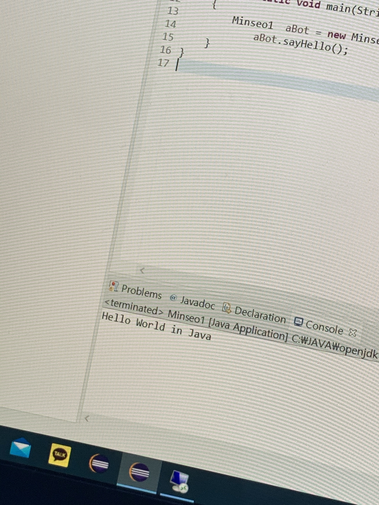
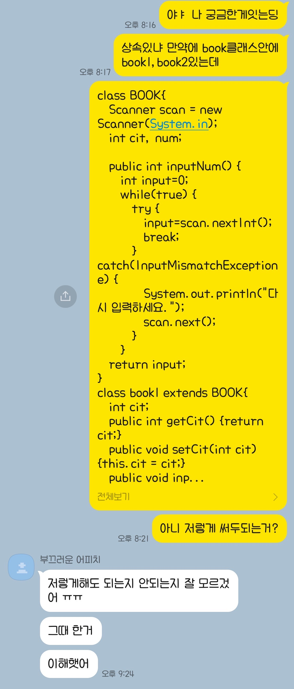
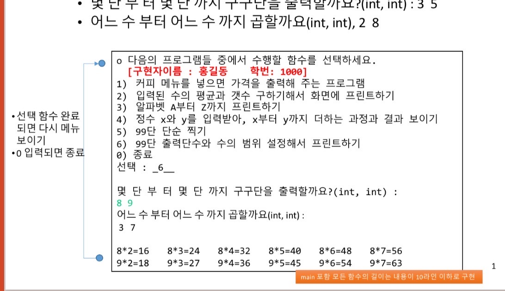

자바는 지금 3학년때 배우고 있는 언어이다.
자바라는 언어를 배우면서 느끼는게
2학년 2학기때 c++를 수강하지 않았던 것이다.
절차지향언어만 알다가
객체지향언어를 배우니까 너무 헷갈리고
이해가 안되는 부분이 많았다.

처음 과제부터 친구랑 열정적으로
랩실에서 과제를 했다.

막히는 부분이 엄청 많아서 그거
하나 찾는데만 하루를 쓰곤 했다.
그 문제 해결방법을 찾으면 하루종일 기분이 좋았다.
반년동안 코딩을 쉬다가 해서
그런가 의욕이 넘첬다.
개강하기 전부터 예습을 시작하고
과제가 나오기만을 기다렸다가
과제나온 날부터 밤까지 코딩을 했다.

과제가 오래동안 안나오면 과제를 기다리곤 했다.
하다보니까 난이도가 급격히 올라간 부분이 있다.
마지막 과제 부분이다.
마지막 과제는 끝내 해결하지
못하고 이번 학기가 끝났다.
마지막 과제를 못풀어서 기말고사도
못풀면 어쩌나 걱정을 많이했는데
마지막과제랑 기말고사 문제랑 비슷한 부분이 많아서
풀지 못한 부분도 있는데 그래도
내가 할 수 있는 부분은
풀어서 다행이다.
부분점수라도 받고싶어서
3시간 30분동안 열심히 풀어서 뿌듯했다.
자바를 내 전공으로 삶고 싶었지만
마지막과제를 못푼게 너무 걸려서
아직 내 전공을 고민중이다.